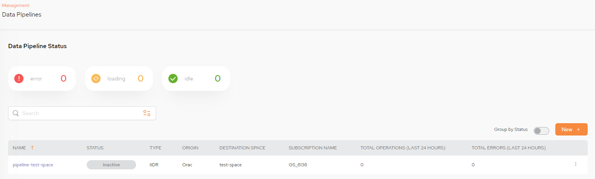

Data Pipelines are flexible, configurable, no-code components that gather data from a mix of System of Record databases and tables. This data is loaded into the extremely high speed GigaSpaces data grid, where it can be accessed on a read/write basis.
The Data Pipeline main screen shows the status of the existing data pipelines. You can see details of a pipeline by clicking on its name in the list.

Data Pipeline Status:
Error – pipeline is not available because of one of the following conditions: not found/connection error/not started/started but not running/loading stopped/suspended
Loading – pipeline is in the process of being configured
Idle – pipeline is configured and the data integration is available
Field Names:
Group by Status – toggle to show the pipelines grouped status
New + – select this to configure a new pipeline. See
NAME – name assigned to the pipeline
The Pipeline name has no naming limitations
STATUS – one of the following conditions: started/stopped/not starting/restarting/not found
TYPE – the connection type for the pipeline, for example, IIDR
ORIGIN – data source type from the System of Record, e.g. Oracle
DESTINATION SPACE-
SUBSCRIPTION NAME -
TOTAL OPERATIONS (LAST 24 HOURS) – number of operations performed by the pipeline in the last 24 hours
TOTAL ERRORS (LAST 24 HOURS) – number of error operations performed by the pipeline in the last 24 hours
Kebab menu (vertical three-dot menu) on the far right - Option to start or delete a pipeline
For more information:
{kind=link}